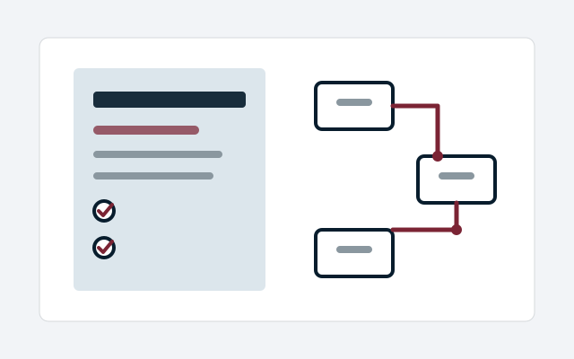

SOP & Process Design Sprint
Turn an important business process into a clear, workable and maintainable operating method.
£1,500 fixed
Service family
9 current governed product routes in the authoritative Business Plan classification.

Turn an important business process into a clear, workable and maintainable operating method.
£1,500 fixed
Create a simpler, controlled information structure that improves retrieval and reduces duplication.
£1,250 fixed
Define a small set of useful measures and a practical reporting structure tied to real decisions.
£1,250 fixed
Map the end-to-end customer journey, identify operational friction and service failures, and show where the journey could become clearer and more effective without removing necessary business controls.
£1,250 fixed
Create a structured, maintainable support knowledge base with clear escalation and ownership.
£1,750 standard; indicative £1,250–£2,500
Create a proportionate continuity baseline around critical services, dependencies, fallback and recovery.
£1,750 standard; indicative £1,250–£2,500
Clarify who decides what, how matters escalate and which governance routines add value.
£1,250 standard; indicative £950–£1,750
Create a fair, traceable complaints process that separates intake, investigation, response, remedy and learning.
£1,500 standard; indicative £1,000–£2,250
Challenge objective claims against available evidence and identify corrections or qualifications before release.
£1,000 standard; indicative £750–£1,500